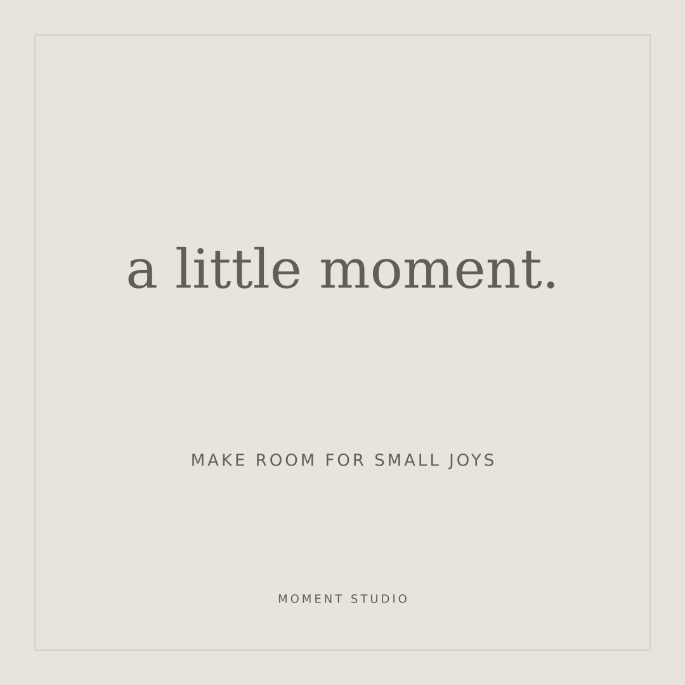
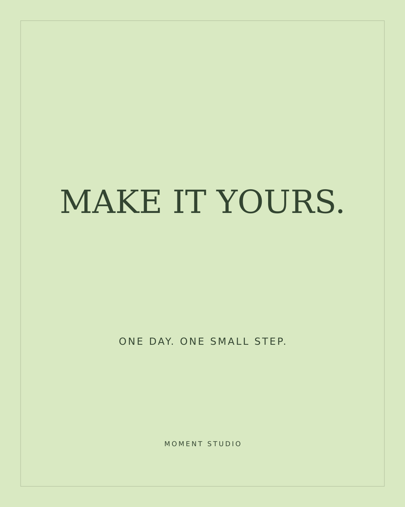
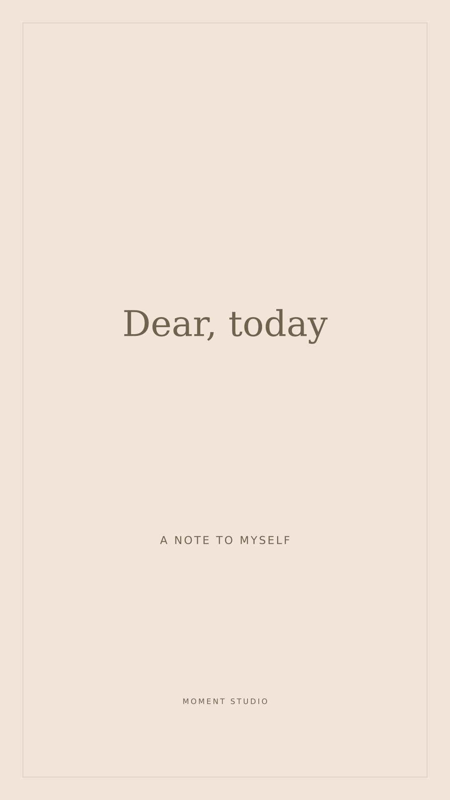

캔버스 삭제 체크 시 배경을 숨기고 해제 시 표시합니다. 비율 아래 사진에 적용을 체크한 동안에만 비율 변경이 사진에도 적용됩니다. 체크 해제는 기존 편집을 되돌리지 않습니다.
캔버스 추가·삭제는 사진과 문구를 보존합니다. 사진 캔버스 체크 후 비율 버튼을 누르면 사진 작업 영역이 바뀝니다. 비율 유지 체크 시 확대·축소 없이 중앙 기준으로 자르며, 출력 픽셀 크기는 남은 사진 크기에 따라 달라집니다. 추가 기능을 금지하는 과제 조항은 없으며, 세 화면비 미리보기/출력 일치 조건은 계속 확인해야 합니다.
전체 소스 다운로드 · 13건 로직 검사 결과 · 동일 입력의 수정 전 FAIL / 수정 후 PASS 기록
구현과 자동 로직 검사는 완료했습니다. 브라우저의 실제 드래그·새로고침·이미지 출력 대조 및 시크릿 접속은 제출 전 확인이 필요합니다. 공개 GitHub 전체 커밋 URL도 별도로 등록해야 합니다. 이 페이지는 모든 평가 항목이 검증되었다고 주장하지 않습니다.
어디로 가나요: 이 사이트의 편집기 첫 화면.
무엇을 하나요: ① PNG/JPEG 업로드 ② 크기·자르기 탭에서 테두리 드래그 후 문구 편집 ③ 이미지 저장.
무엇이 보이면 통과: 선택한 영역·문구·화면비가 미리보기와 저장 이미지에서 같음.
안 될 때: 지원하지 않는 파일의 거부 이유가 표시되고 기존 작업이 유지됨.
AI에게 맡긴 일: 이미지 편집기 구현, 템플릿·JSON 기능, 로직 검사 및 오류 수정.
내가 판단한 일: 크기/자르기를 탭으로 나누고 네 테두리와 네 꼭짓점을 드래그하는 조작 방식, 템플릿 교체 및 저장 기능을 요구함.
AI 제안을 따르지 않은 일: [실제 경험에 맞게 작성. 없으면 그 이유를 작성.]
각 검사의 실제 결과와 화면을 기록하세요. 아래 항목은 실행 절차이며 아직 PASS 기록이 아닙니다.
| 입력 | 예상 결과 |
|---|---|
| 긴 한글 1500자 | 자동 줄바꿈 및 영역 안에 맞춤 |
| 한글 ABC 123 혼합 | 문자 보존, 저장 파일과 동일 |
| 3줄 및 빈 줄 | 줄바꿈 유지 |
| 😀 👨👩👧👦 이모지 | 결합 이모지가 분리되지 않음 |
| 빈 문구 | 문구만 사라지고 사진 유지 |
| 세로 JPEG | 업로드·8방향 크기 및 자르기 정상 |
| 가로 PNG | 업로드·8방향 크기 및 자르기 정상 |
| 투명 PNG | 투명 영역에 배경 표시, 사진만 PNG 저장 시 투명 유지 |
| TXT 또는 손상 사진 | 거부 이유 표시, 기존 편집 유지 |
| 20MB 초과 사진 | 거부 이유 표시, 기존 편집 유지 |
| 정상/손상/필수 누락 JSON | 정상만 복원, 오류 시 기존 템플릿 유지 |
| 1:1·4:5·9:16 각각 저장 | 선택한 화면비이며 미리보기와 잘림·위치·줄바꿈 동일. 사진 캔버스 모드에서는 사진 크기에 따라 출력 픽셀 수가 달라짐 |
서로 다른 이름으로 3개 저장 → 하나 불러오기 → 편집 후 해당 행의 ‘현재 편집으로 수정’ → 다른 하나 삭제 → 새로고침 후 결과 확인. 브라우저를 바꾸거나 데이터를 지우면 로컬 템플릿은 공유·유지되지 않으므로 JSON으로 백업하세요.
별도 제작한 문자 카드입니다. 실제 편집기 출력 대조와는 구분됩니다.



제작·사용 권한 기록 · 이미지 디코딩·메타데이터 확인
결과물: 이 편집기 URL을 시크릿 창에서 확인한 뒤 기입하세요.
소스: ZIP을 공개 GitHub 저장소에 올리고 https://github.com/소유자/저장소/commit/전체커밋번호를 제출하세요. ZIP 다운로드 링크는 과제의 GitHub 고정 커밋 URL을 대신하지 않습니다.